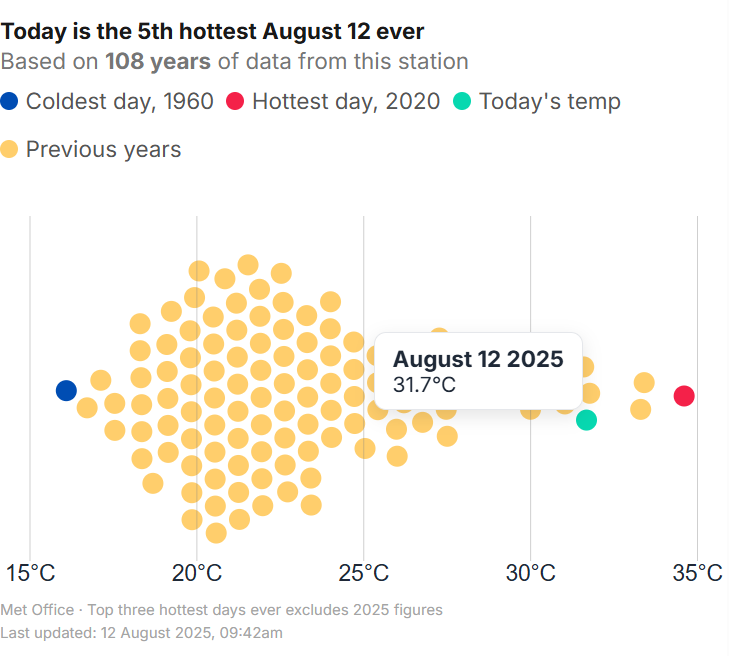

Heatwave postcode search tool
Data analysis · Mobile-first UI · HTML/CSS
During the record breaking August 2025 heatwave I built a tool that allows users to see exactly where current temperatures rank against historical records in their specific area. The goal was to transform abstract climate statistics into a tangible and localised experience for a mass audience.
The tool is built on a mobile-first framework to ensure accessibility for readers on the move. I utilised JavaScript to fetch and process real-time weather data through a postcode API and then compared those figures against a historical climate dataset. This involved significant data analysis to ensure the ranking logic was accurate and that results were served instantly without lag.


This interactive feature became a key part of the editorial coverage by providing a data driven perspective on a major national weather event. It simplified complex climate data and achieved high levels of engagement across both mobile and desktop platforms.